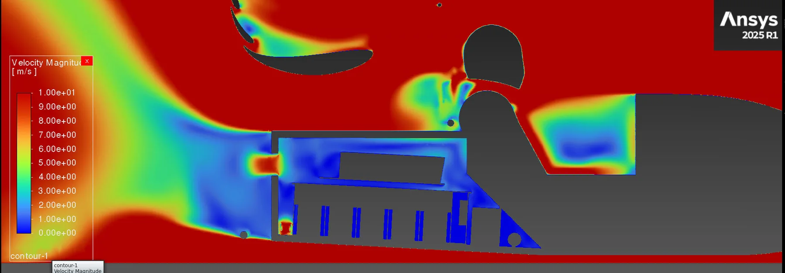

Dulvin
Bandara
Aerodynamics and thermal cooling CFD at Monash Motorsport. Building simulation workflows and physical cooling mechanisms for Formula Student cars, with a focus on internal flow management. Moving towards aero-thermal integration in motorsport.





Focus
Within Monash Motorsport I work primarily on the simulation side of the Aerodynamics and Cooling subsections — building the CFD pipeline, setting up boundary conditions and mass flow rates, and validating designs against analytical targets. My strongest area is CFD development: scripted, repeatable workflows on HPC that cut the manual setup time each simulation campaign demands.
I also work the design side of cooling, building ducting and packaging in Siemens NX and integrating the cooling system into the car's overall architecture. That work currently covers accumulator cooling, with the pipeline set up to extend into motor and inverter cooling.
Away from the team I shoot and edit film and photography, marshal for Motorsport Australia, and teach a co-curricular Aerospace Engineering course to Year 10 and 11 students at John Monash Science School.
Selected work

01
Accumulator Cooling: Ducting Design and CFD
External sidepod ducting and an internal flow path for the M26 pack. 0.768 CLA recovered across the design iteration, balance on 50.0%.

02
Building Cooling into the CFD workflow
Fan boundary conditions, thermal simulation and accumulator ducting added to a workflow that had none, then carried into PyFluent on HPC.

03
Australian Centre for Sports Aerodynamics: CFD Validation
A week correlating our CFD against tunnel data on two cars. Lift discrepancy cut from 23% to roughly 10%.
Education